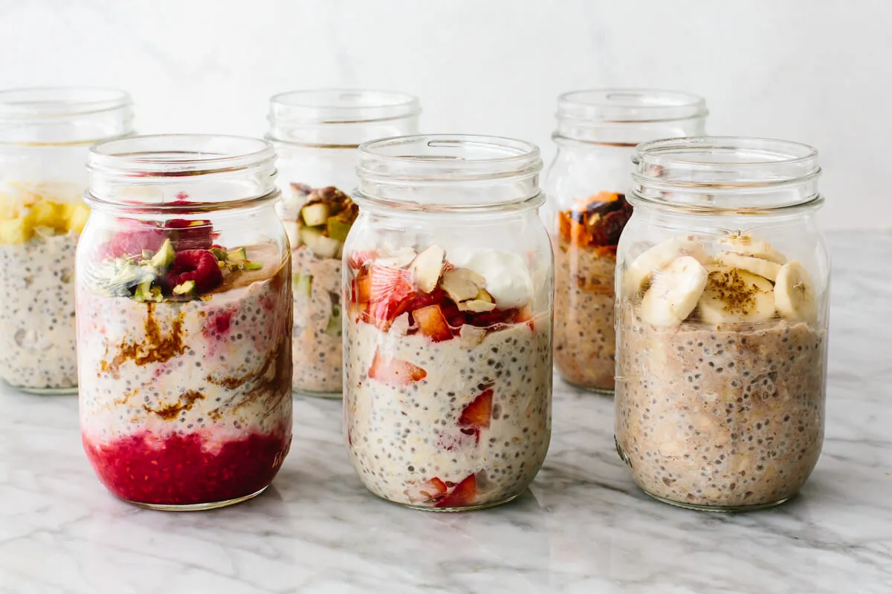

Overnight Oats

Description
Overnight oats "brew" overnight in a fridge to create a creamy texure of porridge unlike anything you've ever seen.
Various ways to modify the recipe so you don't have to eat the same thing every morning.
Ingredients
- Oats
- Almond milk
- Turkish yoghurt
- Maple syrup
- Chia seeds
- Toppings
Steps to prepare
- Add 1 dl of oats, yoghurt and milk to a bowl
- Mix and add 1 tsp chia seeds and 1 tsp of maple syrup
- Mix, cover, put into fridge for 6+ hours
Back to Home